B) Obecné míry, bilance, kojenecká úmrtnostÚloha 1 · 4 b
Logika v kostce
1 · Teorie a vzorce – přímo ze slidů
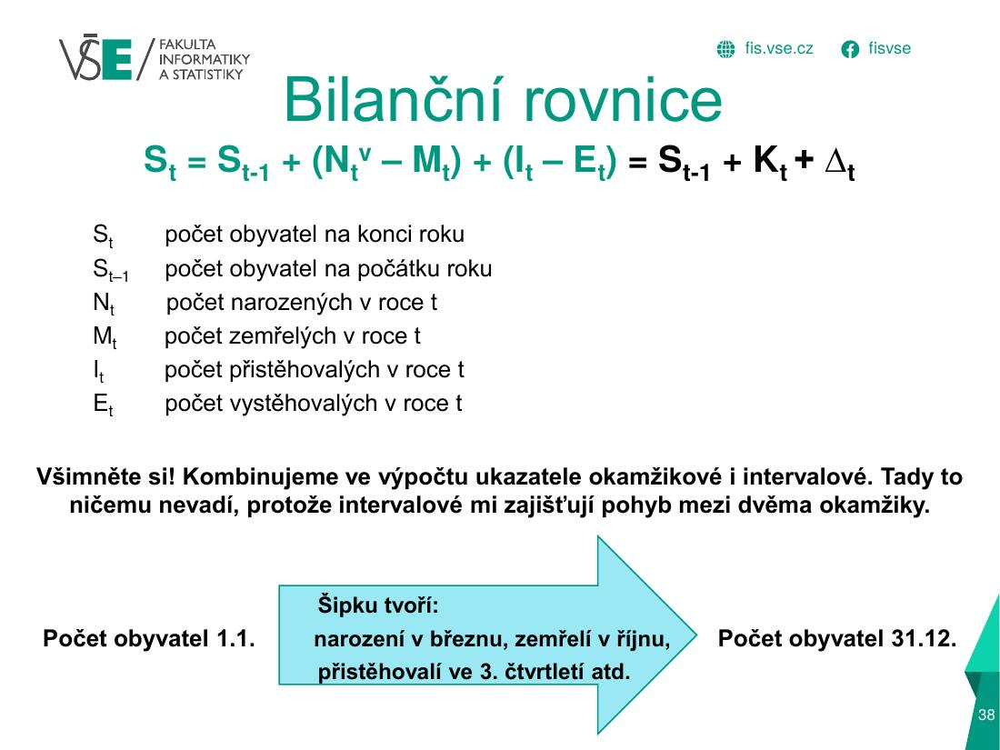
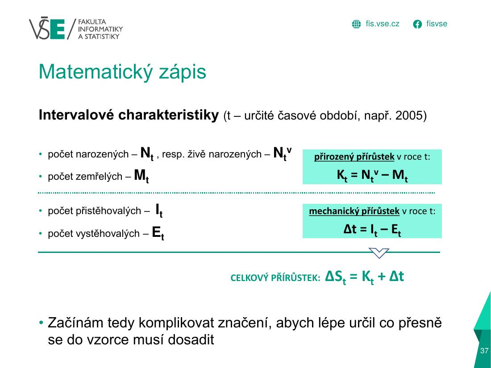
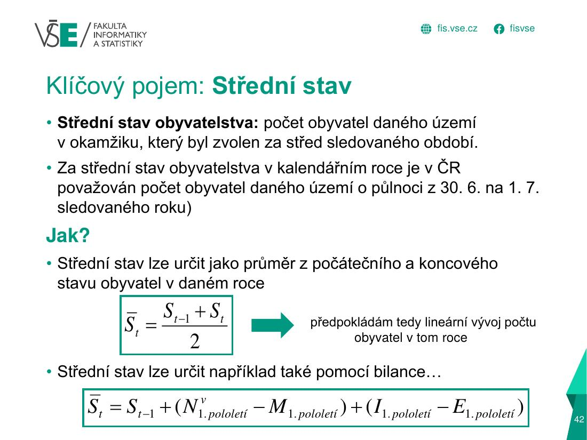
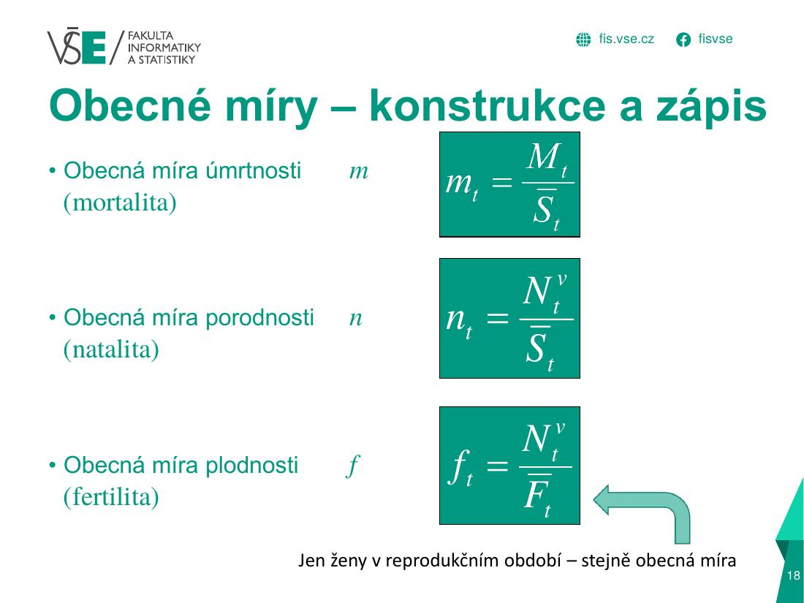
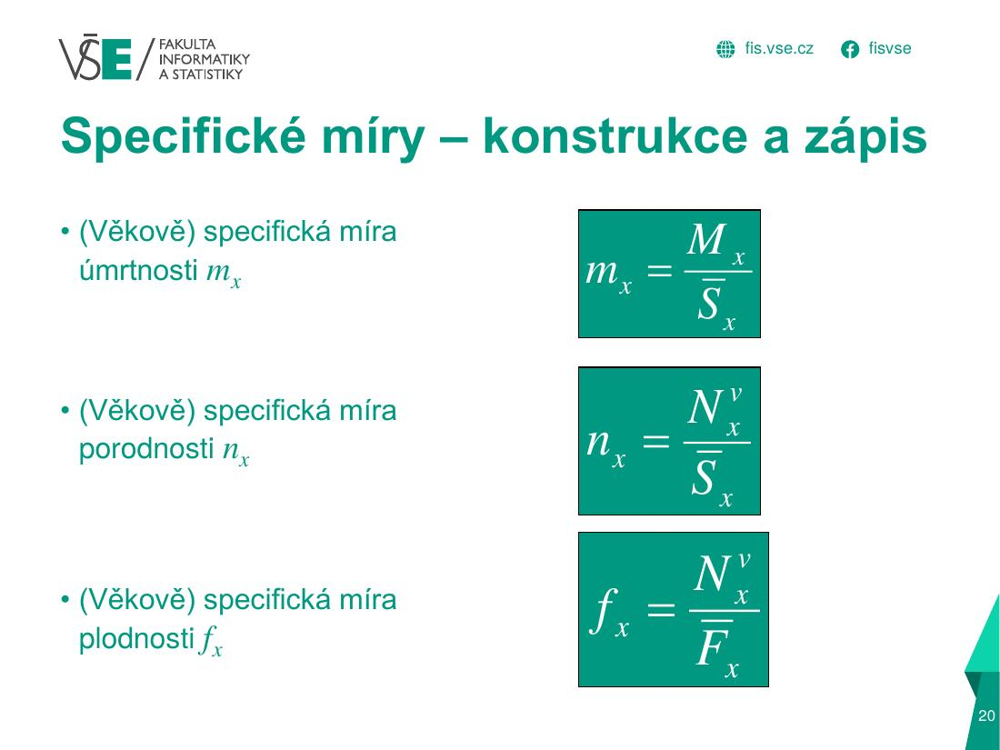
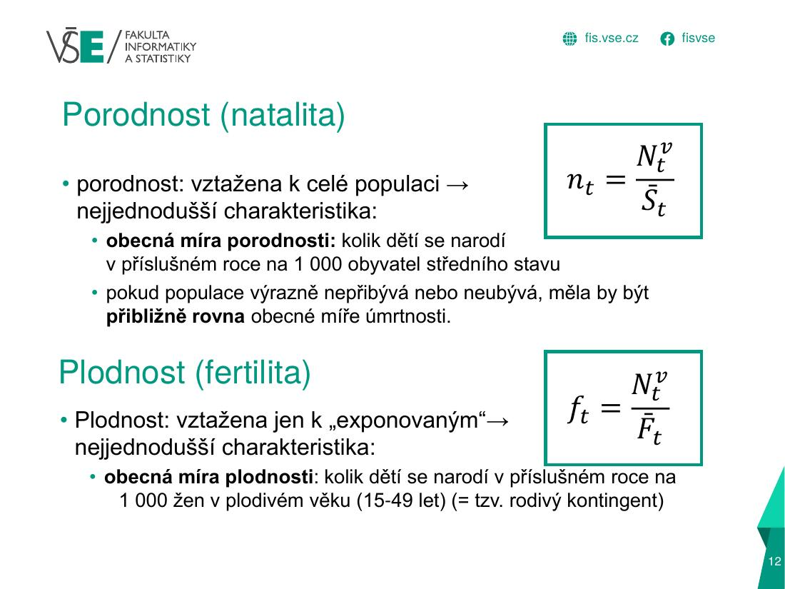
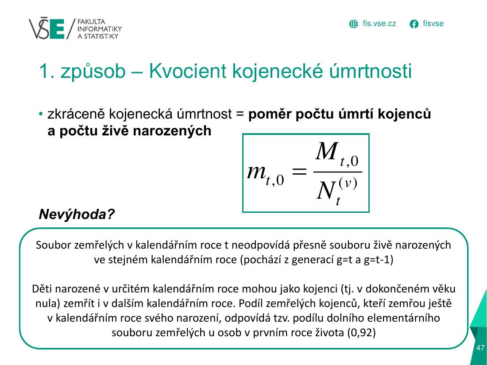
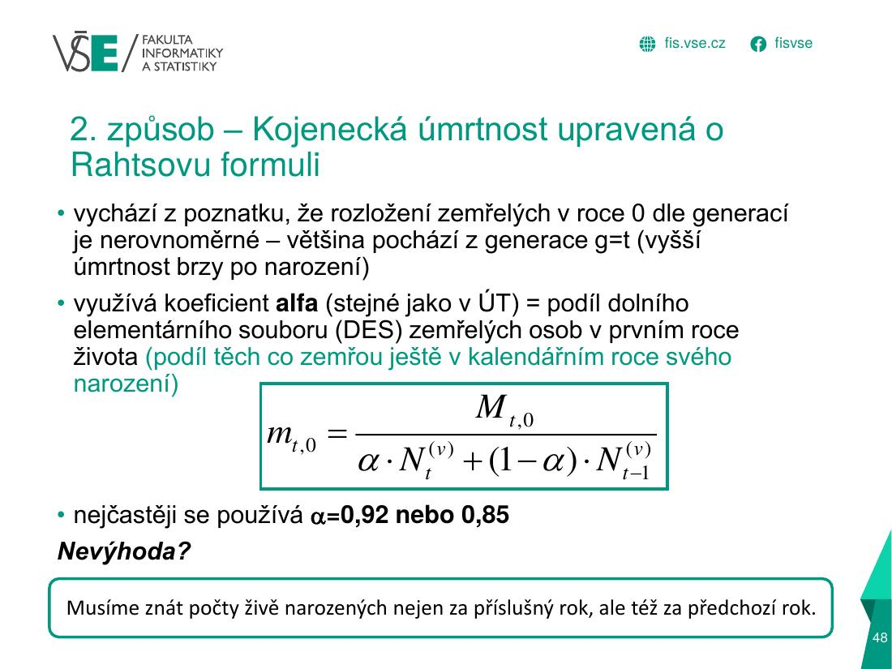
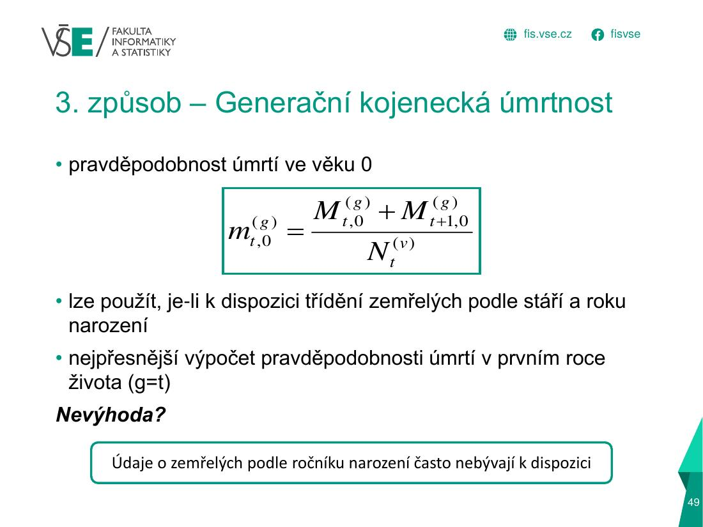
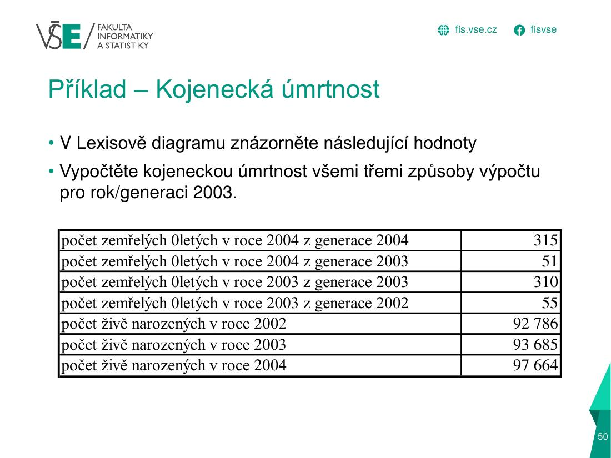
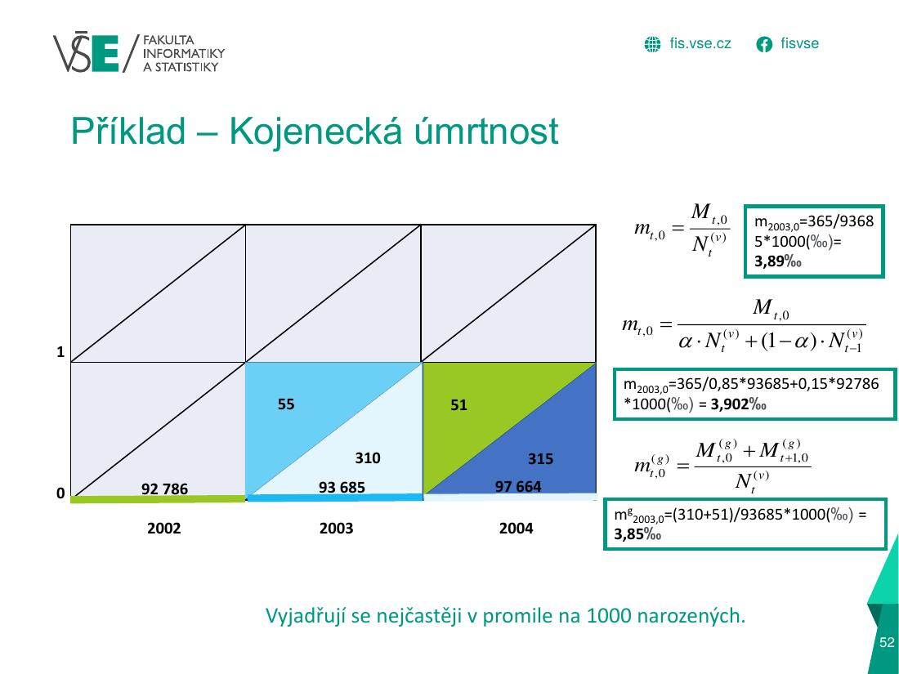
2 · Graficky: jak se to počítá
Co znamená 4,24 ‰? (sňatečnost ČR)
Střední stav a počet událostí
Podíl událostí na obyvatele
Přepočet na 1000 obyvatel (promile)
Bilance obyvatelstva
Bilance – Střední Morava 2018 (osa zkrácená!)
Kojenecká úmrtnost – 3 způsoby (přednáška 4)
1) Kvocient (nejjednodušší)
2) Rahtsova oprava (α = 0,85)
3) Generační (nejpřesnější)
3 · Jak to vypadá v Excelu (tvoje semestrální práce)
| A | B | C | D | E | F | G | H | I | J | K | L | M | N | O | P | Q | R | |
|---|---|---|---|---|---|---|---|---|---|---|---|---|---|---|---|---|---|---|
| 3 | VSO, region soudržnosti, kraj, … | Střední stav obyvatelstva M… | Sňatky Marriages | Rozvody Divorces | Narození Births | Živě narození Live births | Zemřelí Deaths | Přirozený přírůstek Natural… | Stěhování Migration | Celkový přírůstek Total in… | Stav 31.12. Population, 31… | |||||||
| ⋮ | … řádky 4–10 mají stejný vzorec (vyplněno dolů) … | |||||||||||||||||
| 11 | Česká republika | 10 891 162 | 42 548 | 21 231 | 77 905 | 77 636 | 269 | 41 281 | 4 901 | 113 337 | 195 | 120 | -35 701 | 110 600 | 68 560 | 42 040 | 6 339 | 10 915 839 |
| 12 | Pardubický kraj | 529 871 | 1 943 | 1 004 | 3 821 | 3 809 | 12 | 1 976 | 235 | 5 491 | 7 | 5 | -1 682 | 10 752 | 8 589 | 2 163 | 481 | 530 950 |
| 13 | Okres Chrudim | 106 487 | 387 | 216 | 830 | 828 | 2 | 404 | 52 | 1 205 | 4 | 3 | -377 | 2 586 | 2 335 | 251 | -126 | 106 533 |
- Vstupní tabulka (sňatky, rozvody, narození, zemřelí, stěhování…) je kopie řádků z listu Ročenka –
B11 =Ročenka!B6. Jedna řádka = jedna oblast (ČR, kraj, okres). - Sloupec B je střední stav obyvatel (průměr 1. 1. a 31. 12.) – jmenovatel všech obecných měr.
| A | B | C | D | E | F | G | H | |
|---|---|---|---|---|---|---|---|---|
| 16 | Oblast | Obecná míra sňatečnosti | Obecná míra rozvodovosti | Obecná míra porodnosti | Obecná míra úmrtnosti | Obecná míra kojenecké úmrtnosti | Obecná míra imigrace | Obecná míra emigrace |
| 17 | Česká republika | 3,90665 | 1,94938 | 7,15305 | 10,40633 | 0,00179 | 10,15502 | 6,29501 |
| 18 | ??? kraj | 3,66693 | 1,8948 | 7,21119 | 10,3629 | 0,00132 | 20,29173 | 16,20961 |
| 19 | ??? okres | 3,63425 | 2,02842 | 7,79438 | 11,31594 | 0,00376 | 24,28465 | 21,92756 |
B17 =(C11/B11)*1000sňatečnost;C17 =(D11/B11)*1000rozvodovost;E17 =(J11/B11)*1000úmrtnost;G17 =(N11/B11)*1000imigrace;H17 =O11/B11*1000emigrace.- Vždy: událost ÷ střední stav × 1000 = promile.
=(K11/B11)*100, tedy zemřelé do 1 roku děleno obyvatelstvem a ×100. Správně je =K11/F11*1000 – zemřelí do 1 roku děleno živě narozenými a ×1000 (‰). Hodnota 0,00179 v tabulce je proto o několik řádů mimo.4 · Doplňky z přednášek
Další vzorce z přednášek (méně časté, ale mohou být v teorii)
5 · Doplňující text, tabulky a časté chyby
Rozbalit textový výklad (pro kontrolu a opakování)
| Míra | Vzorec | Poznámka |
|---|---|---|
| Obecná míra sňatečnosti | Sň / S̄ · 1000 | |
| Obecná míra rozvodovosti | Ro / S̄ · 1000 | |
| Obecná míra porodnosti | Nv / S̄ · 1000 | živě narození |
| Obecná míra úmrtnosti | M / S̄ · 1000 | |
| Obecná míra imigrace / emigrace | I / S̄ · 1000 · E / S̄ · 1000 | |
| Obecná míra plodnosti | Nv / F̄ · 1000 | F̄ = střední stav žen 15–49 |
| Kojenecká úmrtnost (kvocient) | M0 / Nv · 1000 | na 1000 živě narozených (viz 3 způsoby níže) |
| Přirozený přírůstek / mechanický / celkový | K = Nv − M · Δ = I − E · ΔS = K + Δ | lze dát i na 1000 obyv. |
Vyřešený příklad 1 – obecné míry ČR (příklad 4)
S̄ = 10 700 155; sňatky 45 415; rozvody 21 734.
mrozvodovosti = 21 734 / 10 700 155 · 1000 = 2,03 ‰
Interpretace: v ČR připadají 4,24 sňatky a 2,03 rozvodu na 1000 obyvatel středního stavu za rok.
Vyřešený příklad 2 – bilanční rovnice (příklad 5, Střední Morava 2018)
S1. 1. 2018 = 1 216 234; živě narození 12 434; zemřelí 16 546; přistěhovalí 8 699; vystěhovalí 7 874. Hledáme počet obyvatel k 31. 12. 2018.
Přirozený přírůstek K = −4 112 (úbytek), mechanický Δ = +825, celkový ΔS = −3 287.
Kojenecká úmrtnost – 3 způsoby (přednáška 4, slidy 46–52)
| Způsob | Vzorec | Nevýhoda |
|---|---|---|
| 1) Kvocient (transverzálně) | mt,0 = Mt,0 / Ntv | zemřelí v roce t jsou ze 2 generací (g = t a g = t−1), ale děleno narozenými jen jednoho roku |
| 2) Rahtsova oprava | mt,0 = Mt,0 / (α·Nt + (1−α)·Nt−1) | potřebuje narozené i za rok t−1; α = 0,85 (ČSÚ 0,92) = podíl DES |
| 3) Generační | m(g)t,0 = (M(g)t,0 + M(g)t+1,0) / Nt | nejpřesnější; ale chce zemřelé podle ročníku narození |
Vyřešený příklad – kojenecká úmrtnost 2003 (slide 50–52)
Data: narození 2002 = 92 786; 2003 = 93 685; 2004 = 97 664. Zemřelí 0letí: v 2003 z generace 2003 = 310, v 2003 z generace 2002 = 55, v 2004 z generace 2003 = 51, v 2004 z generace 2004 = 315. M2003,0 = 310 + 55 = 365.
2) 365 / (0,85·93 685 + 0,15·92 786) · 1000 = 3,902 ‰
3) (310 + 51) / 93 685 · 1000 = 3,85 ‰
Interpretace: všechny tři způsoby dávají podobný výsledek, ≈ 3,9 zemřelých kojenců na 1000 živě narozených; generační je nejpřesnější.